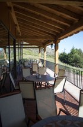

El Restaurante
Nuestra cocina, utilizando productos de calidad, esta basada en platos tradicionales, muchos de ellos, típicos de esta zona de Castilla, como son las migas, las patatas revolconas, la morcilla en rama, el chuletón de Ávila, la caldereta de cabrito, la paletilla de cordero asado, nuestras croquetas de boletus edulis…

Tenemos un menú de lunes a viernes por un precio de 9€, con un mínimo de 3 primeros y 3 segundos a elegir.
En nuestra carta podrá encontrar platos típicos, entrantes para compartir, sabrosos ibéricos, excelentes carnes y frescos pescados, y para endulzar su paladar tenemos unos deliciosos postres caseros o si lo prefiere, podrá degustar una riquísima fruta de la zona (en temporada) como son los higos, las cerezas o las manzanas reineta.
Nuestro restaurante tiene una capacidad para 50 comensales. Le ofrecemos la posibilidad de celebrar acontecimientos especiales, tales como cumpleaños, aniversarios, bautizos, comuniones, comidas de empresa…, y nos comprometemos a confeccionar un menú especial para satisfacer sus necesidades.
Nuestro Objetivo
Nuestro objetivo es que nuestra calidad, tanto a nivel profesional como personal, sea siempre de su agrado. Por ello, seguiremos avanzando, innovando con nuevos platos y preocupándonos siempre de que su paso por nuestro restaurante sea cómodo y placentero.
¿Y por qué La Parada del Arriero?
Hace unas décadas, estos parajes fueron lugar de paso de los arrieros, vendedores ambulantes que caminando siempre a pie, acarreaban en lomos de sus mulas las mercancías que más tarde venderían.
Nuestro nombre es un pequeño homenaje a esos comerciantes, que tantas veces pasaron por aquí y a los que no les amainaba en su empeño, ni el frío, ni la ventisca, ni las heladas… en ese duro trabajo, el suyo, ser arriero.
La Parada del Arriero era un sueño, ahora una realidad. Esta realidad es un proyecto que nace con ilusión, la ilusión de una joven pareja que cree que hay futuro en estas maravillosas tierras que les han visto crecer…